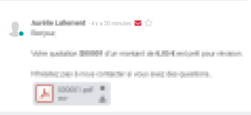
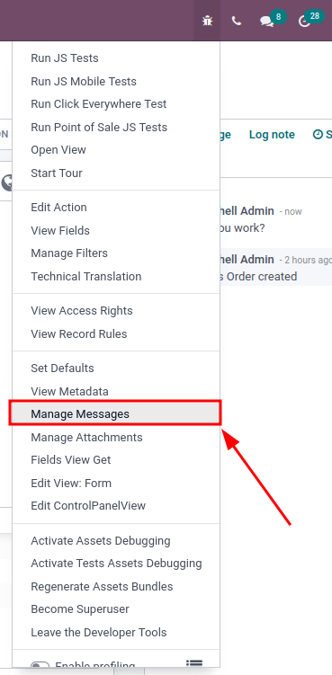

Email issues¶
This document contains an explanation of the most recurring emailing issues in Odoo.
Outgoing emails¶
Email is not sent¶
The first indicator showing that an email has not been sent is the presence of a red ✉️ (envelope) icon, next to the date and time of the message, located in the chatter.
Unsent emails also appear in the Odoo email queue. In developer mode, the email queue can be accessed by going to . Unsent emails appear in turquoise, while sent emails appear in grey.
Common error messages¶
Daily limit reached¶

Each email service provider has its own email sending limits. The limits may be daily, hourly, or sometimes, per minute. This is the same for Odoo, which limits a customer’s sending to prevent Odoo’s email servers from being blacklisted.
Here are the default limits for new databases:
200 emails per day for Odoo Online and Odoo.sh databases with an active subscription.
20 emails per day for one-app free databases.
50 emails per day for trial databases.
In the case of migration, the daily limit might be reset to 50 emails per day.
If the daily limit is reached:
Contact the Odoo support team, who may increase the daily limit depending on the following factors:
How many users are in the database?
Which apps are installed?
The bounce rate: the percentage of email addresses that did not receive emails because they were returned by a mail server on its way to the final recipient.
Use an external outgoing email server to be independent of Odoo’s mail limit (refer to the corresponding email documentation).
Wait until 11 PM (UTC) for the daily limit to reset, and retry sending the email. In developer mode, go to , then click the Retry button next to an unsent email.
Warning
The daily email limit is comprehensive to the database. By default, any internal message, notification, logged note, etc. counts as an email in the daily limit if it notifies someone via email. This can be mitigated by receiving notifications in Odoo, instead of emails.
SMTP error¶
Simple Mail Transport Protocol (SMTP) error messages explain why an email wasn’t transmitted successfully. SMTP is a protocol to describe the email structure, and transmits data from messages over the Internet. The error messages generated by email services are helpful tools to diagnose and troubleshoot email problems.
Example
This is an example of a 554 SMTP permanent delivery error: 554: delivery error: Sorry, your
message to ------@yahoo.com cannot be delivered. This mailbox is disabled (554.30). -
mta4471.mail.bf1.yahoo.com --- Below this line is a copy of the message.
The debug menu can be used to investigate SMTP sending issues from a database. To access the menu, developer mode must be activated. Once activated, navigate to the in the top right of the menu bar (the 🐞 (bug) icon),
The Manage Messages menu opens a list of all the messages sent in a particular record. Within each message there is information on sending, including the type, and subtype, of the message.
Other information includes to whom the message was sent, and whether Odoo received a bounce-back message from an email server.
Note
A user must be on a view in Odoo that has a chatter in order for the Manage Messages menu option to appear.
No error populated¶
Odoo is not always capable of providing information for the reason it failed. The different email providers implement a personalized policy of bounced emails, and it is not always possible for Odoo to interpret it correctly.
If this is a recurring problem with the same client, or the same domain, do not hesitate to contact Odoo Support for help in finding a reason.
Note
One of the most common reasons for an email failing to send with no error message is related to
SPF and/or DKIM configuration. Also, check to make sure the
mail.bounce.alias is defined in the system parameters. Access system parameters in
developer mode by navigating to .
Email is sent late¶
Email campaigns send at a scheduled time, using a delay pre-programed in the database. Odoo uses a delayed task to send emails that are considered “not urgent” (newsletter formats, such as: mass mailing, marketing automation, and events). The system utility cron can be used to schedule programs to run automatically at predetermined intervals. Odoo uses that policy in order to avoid cluttering the mail servers and, instead, prioritizes individual communication. This cron is called Mail: Email Queue Manager, and can be accessed in developer mode by going to .

Tip
What is a cron? A cron is an action that Odoo runs in the background to execute particular code to complete a task.
Important
By default, the Mass Mailing cron runs every 60 minutes. This can be changed to no less than 5 minutes. However, running the action every 5 minutes would bog down the Odoo database (stress the system), so this is not recommended. To edit the mass mailing cron, select the scheduled action Mail: Email Queue Manager, and proceed to make any necessary adjustments.
Emails that are considered urgent (communication from one person to another, such as sales orders, invoices, purchase orders, etc.) are sent immediately.
Incoming emails¶
When there is an issue with incoming emails, there might not be an indication, per se, in Odoo. It is the sending email client, who tries to contact a database, that will get a bounce-back message (most of the time a 550: mailbox unavailable error message).
Email is not received¶
The steps that should be taken depend on the Odoo platform where the database is hosted.
Odoo.sh users can find their live logs on the folder ~/logs/.
Logs are a stored collection of all the tasks completed in a database. They are a text-only representation, complete with timestamps of every action taken on the Odoo database. This can be helpful to track emails leaving the database. Failure to send can also be seen by logs that indicate that the message tried to send repeatedly. Logs will show every action to the email servers from the database.
The folder ~/logs/ (accessed by the command line or on the Odoo.sh dashboard) of an Odoo.sh
database contains a list of files containing the logs of the database. The log files are created
everyday at 5:00 AM (UTC).
Tip
The two most recent days (today and yesterday) are not compressed, while the older ones are, in
order to save space. The naming of the files for today and yesterday are respectively:
odoo.log and odoo.log.1.
For the following days, they are named with their dates, and then compressed. Use the command grep and zgrep (for the compressed ones) to search through the files.
See also
For more information on logs and how to access them via the Odoo.sh dashboard, see this administration documentation.
For more information on accessing logs via the command line visit this developer documentation.
Odoo Online users won’t have access to the logs. However Odoo Support can be contacted if there is a recurring issue with the same client or domain.
Get help from Odoo support¶
In order to get helped efficiently, please provide as much information as possible. Here is a list of what can be helpful when reaching out to the Odoo Support team about an issue:
Send a copy of the email headers. The
.EMLfile (or headers) of the email is the file format containing all the technical information required for an investigation. The documentation from the email provider might explain how to access the EML file/header files. Once the headers of the email are obtained, adding it into the Odoo Support ticket is the most efficient way for the Odoo Support team to investigate.Explain the exact flow that is being followed to normally receive those emails in Odoo. Here are examples of questions whose answers can be useful:
Is this a notification message from a reply being received in Odoo?
Is this a message being sent from the Odoo database?
Is there an incoming email server being used, or is the email somehow being redirected?
Is there an example of an email that has been correctly forwarded?
Provide answers to the following questions:
Is it a generic issue, or is it specific to a use case? If specific to a use case, which one exactly?
Is it working as expected? In case the email is sent using Odoo, the bounce email should reach the Odoo database, and display the red envelope.
Note
The bounce system parameter needs to be set in the technical settings in order for the database
to correctly receive bounce messages. To access this setting, go to . Then select the parameter name
mail.bounce.alias and set the value to bounce if it isn’t already set.